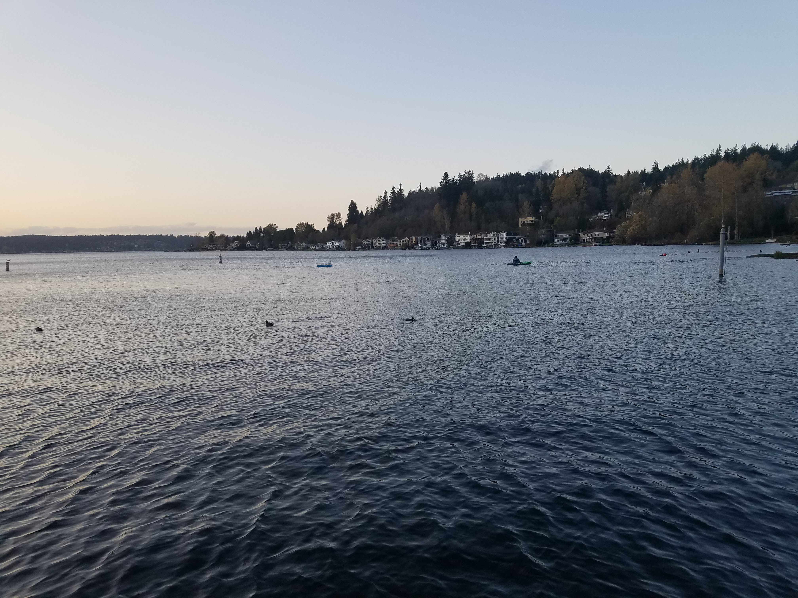

Computer-controlled Robotic Arm
Who doesn't want to kayak from Seattle to Los Angeles? The journey is a little long so we thought it would be fun to build an autonomous kayak to do it for us.
This is a mostly straight-forward application of the PX4 flightstack to a boat. Designed for drones, it very nicely takes care of localization and waypoint navigation. It's support for planning paths around obstacles is in very early beta (as of writing), but that isn't super necessary on open water.
Motoring around Haller Lake
This time in Lake Samamish. Everything performed as it was supposed to, but our 3d printed propellers aren't producing as much thrust as we'd expect.